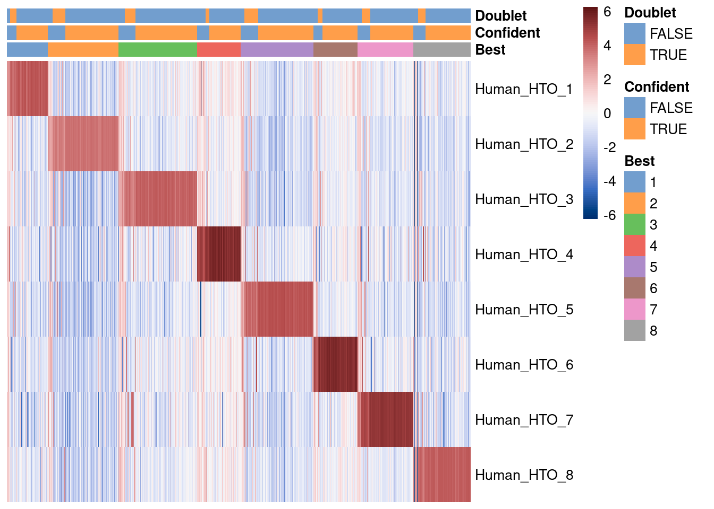

Last updated: 2022-06-15
Checks: 7 0
Knit directory:
paed-cf-cite-seq/
This reproducible R Markdown analysis was created with workflowr (version 1.7.0). The Checks tab describes the reproducibility checks that were applied when the results were created. The Past versions tab lists the development history.
Great! Since the R Markdown file has been committed to the Git repository, you know the exact version of the code that produced these results.
Great job! The global environment was empty. Objects defined in the global environment can affect the analysis in your R Markdown file in unknown ways. For reproduciblity it’s best to always run the code in an empty environment.
The command set.seed(20210524) was run prior to running the code in the R Markdown file.
Setting a seed ensures that any results that rely on randomness, e.g.
subsampling or permutations, are reproducible.
Great job! Recording the operating system, R version, and package versions is critical for reproducibility.
Nice! There were no cached chunks for this analysis, so you can be confident that you successfully produced the results during this run.
Great job! Using relative paths to the files within your workflowr project makes it easier to run your code on other machines.
Great! You are using Git for version control. Tracking code development and connecting the code version to the results is critical for reproducibility.
The results in this page were generated with repository version 07fd1a8. See the Past versions tab to see a history of the changes made to the R Markdown and HTML files.
Note that you need to be careful to ensure that all relevant files for the
analysis have been committed to Git prior to generating the results (you can
use wflow_publish or wflow_git_commit). workflowr only
checks the R Markdown file, but you know if there are other scripts or data
files that it depends on. Below is the status of the Git repository when the
results were generated:
Ignored files:
Ignored: .Rhistory
Ignored: .Rproj.user/
Ignored: analysis/obsolete/
Ignored: code/obsolete/
Ignored: data/190930_A00152_0150_BHTYCMDSXX/
Ignored: data/CellRanger/
Ignored: data/GSE127465_RAW/
Ignored: data/SCEs/02_ZILIONIS.sct_normalised.SEU.rds
Ignored: data/SCEs/03_C133_Neeland.demultiplexed.SCE.rds
Ignored: data/SCEs/03_C133_Neeland.emptyDrops.SCE.rds
Ignored: data/SCEs/03_C133_Neeland.nuclear_fraction_calls.rds
Ignored: data/SCEs/03_C133_Neeland.preprocessed.SCE.rds
Ignored: data/SCEs/03_CF_BAL_Pilot.CellRanger_v6.SCE.rds
Ignored: data/SCEs/03_CF_BAL_Pilot.emptyDrops.SCE.rds
Ignored: data/SCEs/03_CF_BAL_Pilot.nuclear_fraction_calls.rds
Ignored: data/SCEs/03_CF_BAL_Pilot.preprocessed.SCE.rds
Ignored: data/SCEs/03_COMBO.clustered.SEU.rds
Ignored: data/SCEs/03_COMBO.clustered_annotated_macrophages_diet.SEU.rds
Ignored: data/SCEs/03_COMBO.clustered_annotated_others_diet.SEU.rds
Ignored: data/SCEs/03_COMBO.clustered_annotated_tcells_diet.SEU.rds
Ignored: data/SCEs/03_COMBO.clustered_azimuth.SEU.rds
Ignored: data/SCEs/03_COMBO.clustered_azimuth_v2.SEU.rds
Ignored: data/SCEs/03_COMBO.clustered_diet.SEU.rds
Ignored: data/SCEs/03_COMBO.integrated.SEU.rds
Ignored: data/SCEs/03_COMBO.zilionis_mapped.SEU.rds
Ignored: data/SCEs/04_C133_Neeland.adt_dsb_normalised.rds
Ignored: data/SCEs/04_C133_Neeland.adt_integrated.rds
Ignored: data/SCEs/04_C133_Neeland.all_integrated.SEU.rds
Ignored: data/SCEs/04_CF_BAL_Pilot.CellRanger_v6.SCE.rds
Ignored: data/SCEs/04_CF_BAL_Pilot.emptyDrops.SCE.rds
Ignored: data/SCEs/04_CF_BAL_Pilot.preprocessed.SCE.rds
Ignored: data/SCEs/04_CF_BAL_Pilot.transfer_adt.SEU.rds
Ignored: data/SCEs/04_COMBO.clean_clustered.SEU.rds
Ignored: data/SCEs/04_COMBO.clean_clustered.SEU_bk.rds
Ignored: data/SCEs/04_COMBO.clean_integrated.SEU.rds
Ignored: data/SCEs/04_COMBO.clean_integrated.SEU_bk.rds
Ignored: data/SCEs/04_COMBO.clean_macrophages_diet.SEU.rds
Ignored: data/SCEs/04_COMBO.clean_others_diet.SEU.rds
Ignored: data/SCEs/04_COMBO.clean_tcells_diet.SEU.rds
Ignored: data/SCEs/04_COMBO.clustered.SEU.rds
Ignored: data/SCEs/04_COMBO.clustered_annotated_adt_diet.SEU.rds
Ignored: data/SCEs/04_COMBO.clustered_annotated_lung_diet.SEU.rds
Ignored: data/SCEs/04_COMBO.clustered_annotated_macrophages_diet.SEU.rds
Ignored: data/SCEs/04_COMBO.clustered_annotated_others_diet.SEU.rds
Ignored: data/SCEs/04_COMBO.clustered_annotated_tcells_diet.SEU.rds
Ignored: data/SCEs/04_COMBO.clustered_diet.SEU.rds
Ignored: data/SCEs/04_COMBO.integrated.SEU.rds
Ignored: data/SCEs/04_COMBO.macrophages_clustered.SEU.rds
Ignored: data/SCEs/04_COMBO.macrophages_integrated.SEU.rds
Ignored: data/SCEs/04_COMBO.others_clustered.SEU.rds
Ignored: data/SCEs/04_COMBO.others_integrated.SEU.rds
Ignored: data/SCEs/04_COMBO.tcells_clustered.SEU.rds
Ignored: data/SCEs/04_COMBO.tcells_integrated.SEU.rds
Ignored: data/SCEs/04_COMBO.zilionis_mapped.SEU.rds
Ignored: data/SCEs/05_CF_BAL_Pilot.transfer_adt.SEU.rds
Ignored: data/SCEs/05_COMBO.clean_clustered.SEU.rds
Ignored: data/SCEs/05_COMBO.clean_integrated.SEU.rds
Ignored: data/SCEs/05_COMBO.clean_macrophages_diet.SEU.rds
Ignored: data/SCEs/05_COMBO.clean_others_diet.SEU.rds
Ignored: data/SCEs/05_COMBO.clean_tcells_diet.SEU.rds
Ignored: data/SCEs/05_COMBO.clustered_annotated_adt_diet.SEU.rds
Ignored: data/SCEs/05_COMBO.clustered_annotated_lung_diet.SEU.rds
Ignored: data/SCEs/05_COMBO.clustered_annotated_macrophages_diet.SEU.rds
Ignored: data/SCEs/05_COMBO.clustered_annotated_others_diet.SEU.rds
Ignored: data/SCEs/05_COMBO.clustered_annotated_tcells_diet.SEU.rds
Ignored: data/SCEs/05_COMBO.macrophages_clustered.SEU.rds
Ignored: data/SCEs/05_COMBO.macrophages_integrated.SEU.rds
Ignored: data/SCEs/05_COMBO.others_clustered.SEU.rds
Ignored: data/SCEs/05_COMBO.others_integrated.SEU.rds
Ignored: data/SCEs/05_COMBO.tcells_clustered.SEU.rds
Ignored: data/SCEs/05_COMBO.tcells_integrated.SEU.rds
Ignored: data/SCEs/06_COMBO.clean_clustered.SEU.rds
Ignored: data/SCEs/06_COMBO.clean_integrated.SEU.rds
Ignored: data/SCEs/06_COMBO.clean_macrophages_diet.SEU.rds
Ignored: data/SCEs/06_COMBO.clean_others_diet.SEU.rds
Ignored: data/SCEs/06_COMBO.clean_tcells_diet.SEU.rds
Ignored: data/SCEs/06_COMBO.macrophages_clustered.SEU.rds
Ignored: data/SCEs/06_COMBO.macrophages_integrated.SEU.rds
Ignored: data/SCEs/06_COMBO.others_clustered.SEU.rds
Ignored: data/SCEs/06_COMBO.others_integrated.SEU.rds
Ignored: data/SCEs/06_COMBO.tcells_clustered.SEU.rds
Ignored: data/SCEs/06_COMBO.tcells_integrated.SEU.rds
Ignored: data/SCEs/C133_Neeland.CellRanger.SCE.rds
Ignored: data/SCEs/obsolete/
Ignored: data/emptyDrops/
Ignored: data/obsolete/
Ignored: data/sample_sheets/obsolete/
Ignored: output/marker-analysis/obsolete/
Ignored: output/obsolete/
Ignored: rename_captures.R
Ignored: renv/library/
Ignored: renv/staging/
Ignored: wflow_background.R
Unstaged changes:
Modified: .gitignore
Modified: README.md
Modified: renv.lock
Modified: renv/.gitignore
Modified: renv/activate.R
Modified: renv/settings.dcf
Note that any generated files, e.g. HTML, png, CSS, etc., are not included in this status report because it is ok for generated content to have uncommitted changes.
These are the previous versions of the repository in which changes were made
to the R Markdown (analysis/03_C133_Neeland.demultiplex.Rmd) and HTML (docs/03_C133_Neeland.demultiplex.html)
files. If you’ve configured a remote Git repository (see
?wflow_git_remote), click on the hyperlinks in the table below to
view the files as they were in that past version.
| File | Version | Author | Date | Message |
|---|---|---|---|---|
| html | 906579f | Jovana Maksimovic | 2022-06-15 | Build site. |
| html | 7eeb7b1 | Jovana Maksimovic | 2022-06-03 | Build site. |
| html | 49a0464 | Jovana Maksimovic | 2022-05-27 | Build site. |
| Rmd | 175ab7c | Jovana Maksimovic | 2022-05-27 | wflow_publish("analysis/03_C133_Neeland.demultiplex.Rmd") |
| html | 262c32a | Jovana Maksimovic | 2022-05-26 | Remove old analysis files |
| html | 5e9642c | Jovana Maksimovic | 2022-03-07 | Build site. |
| Rmd | ae63b78 | Jovana Maksimovic | 2022-03-07 | wflow_publish(c("analysis/03_C133_Neeland.emptyDrops.Rmd", "analysis/03_CF_BAL_Pilot.emptyDrops.Rmd", |
suppressPackageStartupMessages(library(BiocStyle))
suppressPackageStartupMessages(library(tidyverse))
suppressPackageStartupMessages(library(here))
suppressPackageStartupMessages(library(glue))
suppressPackageStartupMessages(library(DropletUtils))
suppressPackageStartupMessages(library(scran))
suppressPackageStartupMessages(library(scater))
suppressPackageStartupMessages(library(scuttle))
suppressPackageStartupMessages(library(janitor))
suppressPackageStartupMessages(library(cowplot))
suppressPackageStartupMessages(library(patchwork))
suppressPackageStartupMessages(library(scales))
suppressPackageStartupMessages(library(DropletQC))Cells were obtained from 8 donors. We used ‘cell hashing’ to distinguish cells from each donor. Cells from each samples were labelled with a unique hashtag oligo (HTO) and then evenly mixed (i.e. 1:1:1:1:1:1:1:1 ratio) and a sample of the mixture run over 2 10x captures. We can additionally use the natural genetic variation between donors to distinguish cells from each donor.
The aim here is to demultiplex the data so we can assign each droplet to a single donor (via its HTO and/or genetics).
Cell hashing uses a series of oligo-tagged antibodies (hash tag oligos, HTOs) against ubiquitously expressed surface proteins with different barcodes to uniquely label cells from distinct samples, which can be subsequently pooled in one scRNA-seq run. By sequencing these tags alongside the cellular transcriptome, we can assign each cell to its sample of origin, and robustly identify doublets originating from multiple samples.
The aim of HTO demultiplexing is to assign each droplet to the relevant pool. It will also assign droplets as ‘doublets’ (those droplets containing multiple HTOs) or ‘negative’ (those droplets with insufficient HTOs). To demultiplex these samples we use the HTO demultiplexing routines from DropletUtils.
To demultiplex droplets from the donors we rely on the natural genetic variation of cells from different donors.
We do not have reference genotypes from each donor, but we can still assign cells back to donor_A, donor_B, …, donor_H.
To do this, we use vireo (Variational Inference for Reconstructing Ensemble Origin).
The count data were processed using CellRanger and the DropletUtils R/Bioconductor packages.
Empty droplets were filtered out using emptyDrops and samples were demultiplexed using hashedDrops, which can be viewed here.
The results are available in a SingleCellExperiment object, along with the metadata in data/SCEs/03_C133_Neeland.emptyDrops.SCE.rds.
sce <- readRDS(here("data", "SCEs", "03_C133_Neeland.emptyDrops.SCE.rds"))
sceclass: SingleCellExperiment
dim: 36601 24828
metadata(1): Samples
assays(1): counts
rownames(36601): ENSG00000243485 ENSG00000237613 ... ENSG00000278817
ENSG00000277196
rowData names(3): ID Symbol Type
colnames(24828): 1_AAACCCACACTTCCTG-1 1_AAACCCACAGACAAAT-1 ...
2_TTTGTTGTCATTGGTG-1 2_TTTGTTGTCGATGGAG-1
colData names(3): Sample Barcode capture
reducedDimNames(0):
mainExpName: NULL
altExpNames(2): HTO ADTWe use the emptyDrops() function from the DropletUtils package to test whether the expression profile for each cell barcode is significantly different from the ambient RNA pool (Lun et al. 2018).
This tends to be less conservative than the cell calling algorithm from the CellRanger pipeline, which often discards genuine cells with low RNA content (and thus low total counts).
Any significant deviation indicates that the barcode corresponds to a cell-containing droplet.
We call cells at a false discovery rate (FDR) of 0.1%, meaning that no more than 0.1% of our called barcodes should be empty droplets on average.
We run hashedDrops() from the DropletUtils package to demultiplex the HTO count matrix for the subset of cell-containing libraries.
We run this separately on each capture, which allows estimation of capture-specific ambient HTO profiles.
hashedDrops() reports the likely pool of origin for each library based on its most abundant HTO after adjusting those abundances for the ambient contamination.
The hashedDrops() function estimates the ambient contamination of each HTO, which is adjusted for when assigning barcodes to HTO labels.
Prepare the object.
# Preparing HTO data -----------------------------------------------------------
hto_counts <- counts(altExp(sce, "HTO"))Demultiplex the cells using HTOs.
# Demultiplexing HTOs (DropletUtils) -------------------------------------------
confident.min <- 2
hash_stats <- hashedDrops(hto_counts, confident.min = confident.min)
hist(
hash_stats$LogFC,
xlab = "Log fold-change from best to second HTO",
main = "")
abline(v = confident.min, col = "red", lty = 2, lwd = 2)
Numbers of cells confidently assigned to each hashtag.
table(Raw = hash_stats$Best, Confident = hash_stats$Confident) Confident
Raw FALSE TRUE
1 510 1665
2 956 2849
3 892 3297
4 669 1673
5 943 2957
6 477 1878
7 682 2333
8 646 2401Plot HTO logFCs for all cells.
# Doublets show up in the top-left, singlets in the bottom right.
plot(hash_stats$LogFC, hash_stats$LogFC2, pch=".")
points(hash_stats$LogFC[hash_stats$Confident],
hash_stats$LogFC2[hash_stats$Confident],
pch=".",
col = "red")
abline(v = 2, h = 2, col = "blue", lty = 2)
Visualise HTO demultiplexing results.
# Visualization
tmp <- SingleCellExperiment(
assays = list(counts = hto_counts),
colData = hash_stats)
sf <- librarySizeFactors(counts(tmp))
# NOTE: Kludge to workaround non-positive size factors (corresponding to
# droplets with zero HTO counts).
sf <- pmax(sf, min(sf[sf > 0]))
sizeFactors(tmp) <- sf
tmp <- logNormCounts(tmp)
tmp$Best <- factor(tmp$Best)
tmp$Confident <- factor(tmp$Confident)
tmp$Doublet <- factor(tmp$Doublet)
plotHeatmap(
tmp,
rownames(tmp),
order_columns_by = c("Best", "Confident", "Doublet"),
center = TRUE,
symmetric = TRUE,
color = hcl.colors(101, "Blue-Red 3"),
cluster_rows = FALSE)
Add HTO data to SCE and save.
# Add to SCE
stopifnot(identical(colnames(sce), rownames(hash_stats)))
colData(sce) <- cbind(colData(sce), hash_stats)
sce$HTO <- factor(
case_when(
sce$Confident ~ rownames(hto_counts)[sce$Best],
sce$Doublet ~ "Doublet",
TRUE ~ "Unknown"),
levels = c(paste0("Human_HTO_", 1:8), "Doublet", "Unknown"))
dim(sce)[1] 36601 24828Figure 5.1 plots the number and proportion of droplets assigned to each HTO in each capture and if these were confidently or not confidently assigned.
p1 <- ggcells(sce) +
geom_bar(
aes(x = Best, fill = Confident),
position = position_stack(reverse = TRUE)) +
coord_flip() +
ylab("Number of droplets") +
theme_cowplot(font_size = 7)
p2 <- ggcells(sce) +
geom_bar(
aes(x = Best, fill = Confident),
position = position_fill(reverse = TRUE)) +
coord_flip() +
ylab("Proportion of droplets") +
theme_cowplot(font_size = 7)
(p1 + p1 + facet_grid(~capture) + plot_layout(widths = c(1, 2))) /
(p2 + p2 + facet_grid(~capture) + plot_layout(widths = c(1, 2))) +
plot_layout(guides = "collect")Figure 5.1: Number and proportion of droplets assigned to each HTO and if these were confidently or not confidently assigned overall (left) and within each capture (right).
The HTOs allow us to assign droplets to donors. However, if for some reason the HTO data were unable to match a droplet to a donor, we might still be able to use the genetic data to recover the donor identity of the droplet.
We used cellsnp-lite (v1.2.0) (Huang and Huang 2021) to genotype each scRNA-seq droplet at common SNPs from the 1000 Genomes Project (see code/cellsnp-lite.sh).
This gives us a cell variant call format (VCF) file with genotypes for each droplet, from which we can extract the variant-by-cell matrices of integer counts of the number of reads supporting the reference and alternative allele for each variant in each cell and the total number of reads overlapping each variant in each cell.
We use vireo (Variational Inference for Reconstructing Ensemble Origin) to assign droplets to donors, using the knowledge that there are 8 donors in the pool (see code/vireo.sh).
This also identifies doublets by identifying any barcodes with genotypes from multiple donors.
capture_names <- levels(sce$capture)
capture_names <- setNames(capture_names, capture_names)
vireo_df <- do.call(
rbind,
lapply(capture_names, function(cn) {
vireo_df <- read.table(
here("data", "vireo", cn, "donor_ids.tsv"),
header = TRUE)
vireo_df$donor_id <- paste0(cn, "_", vireo_df$donor_id)
captureNumber <- sub("C133_", "", cn)
vireo_df$colname <- paste0(captureNumber, "_", vireo_df$cell)
# NOTE: Reorder so matches SCE.
j <- match(colnames(sce)[sce$capture == cn], vireo_df$colname)
stopifnot(!anyNA(j))
vireo_df <- vireo_df[j, ]
}))The table below summarises the genotype-based demultiplexing results.
knitr::kable(
tabyl(vireo_df, donor_id) %>%
adorn_pct_formatting(1),
caption = "Assignment of droplets to donors using vireo.")| donor_id | n | percent |
|---|---|---|
| C133_1_donor0 | 1307 | 5.3% |
| C133_1_donor1 | 916 | 3.7% |
| C133_1_donor2 | 1165 | 4.7% |
| C133_1_donor3 | 1162 | 4.7% |
| C133_1_donor4 | 1843 | 7.4% |
| C133_1_donor5 | 1563 | 6.3% |
| C133_1_donor6 | 1529 | 6.2% |
| C133_1_donor7 | 1340 | 5.4% |
| C133_1_doublet | 875 | 3.5% |
| C133_1_unassigned | 200 | 0.8% |
| C133_2_donor0 | 1414 | 5.7% |
| C133_2_donor1 | 958 | 3.9% |
| C133_2_donor2 | 1583 | 6.4% |
| C133_2_donor3 | 1729 | 7.0% |
| C133_2_donor4 | 1988 | 8.0% |
| C133_2_donor5 | 1238 | 5.0% |
| C133_2_donor6 | 1151 | 4.6% |
| C133_2_donor7 | 1283 | 5.2% |
| C133_2_doublet | 1261 | 5.1% |
| C133_2_unassigned | 323 | 1.3% |
The Genotyping and Assigning barcodes to donors is done independently for each capture.
As such, there is no guarantee that donor0 is C133_1 is the same person as donor0 in C133_2.
We therefore then need to match donors across captures by matching their genotypes across captures.
We do this by matching the donor-level genotypes from the scRNA-seq data across pairs of captures.
library(vcfR)
f1 <- here("data/vireo/C133_1/GT_donors.vireo.vcf.gz")
f2 <- here("data/vireo/C133_2/GT_donors.vireo.vcf.gz")
x1 <- read.vcfR(f1)
x2 <- read.vcfR(f2)
# Create unique ID for each locus in each capture.
y1 <- paste(
x1@fix[,"CHROM"],
x1@fix[,"POS"],
x1@fix[,"REF"],
x1@fix[,"ALT"],
sep = "_")
y2 <- paste(
x2@fix[,"CHROM"],
x2@fix[,"POS"],
x2@fix[,"REF"],
x2@fix[,"ALT"],
sep = "_")
# Only keep the loci in common between the 2 captures.
i1 <- na.omit(match(y2, y1))
i2 <- na.omit(match(y1, y2))
# Construct genotype matrix at common loci from the 2 captures.
g1 <- apply(
x1@gt[i1, paste0("donor", 0:7)],
2,
function(x) sapply(strsplit(x, ":"), `[[`, 1))
g2 <- apply(
x2@gt[i2, paste0("donor", 0:7)],
2,
function(x) sapply(strsplit(x, ":"), `[[`, 1))
# Count number of genotype matches between pairs of donors (one from each
# capture) and convert to a proportion.
donor_names <- paste0("donor", 0:7)
z <- matrix(
NA_real_,
nrow = 8,
ncol = 8,
dimnames = list(donor_names, donor_names))
for (i in rownames(z)) {
for (j in colnames(z)) {
z[i, j] <- sum(g1[, i] == g2[, j]) / nrow(g1)
}
}
rownames(z) <- paste0("C133_1_", rownames(z))
colnames(z) <- paste0("C133_2_", colnames(z))Figure 6.1 shows that we can easily match donors between pairs of captures by selecting the pair with the highest proportion of matching genotypes.
pheatmap::pheatmap(
z,
color = viridisLite::inferno(101),
cluster_rows = FALSE,
cluster_cols = FALSE,
main = "Proportion of matching genotypes")
Figure 6.1: Proportion of matching genotypes between capture C133_1 (rows) and capture C133_2 (columns).
The table below gives the best matches between the two captures.
best_match_df <- data.frame(
C133_1 = rownames(z),
C133_2 = apply(
z, 1,
function(x) colnames(z)[which.max(x)]),
check.names = FALSE)
best_match_df$genetic_donor <- paste0("donor_", LETTERS[1:8])
knitr::kable(
dplyr::select(best_match_df, genetic_donor, everything()),
caption = "Best match between the scRNA-seq donor and the mini-bulk donor.",
row.names = FALSE)| genetic_donor | C133_1 | C133_2 |
|---|---|---|
| donor_A | C133_1_donor0 | C133_2_donor7 |
| donor_B | C133_1_donor1 | C133_2_donor1 |
| donor_C | C133_1_donor2 | C133_2_donor5 |
| donor_D | C133_1_donor3 | C133_2_donor6 |
| donor_E | C133_1_donor4 | C133_2_donor4 |
| donor_F | C133_1_donor5 | C133_2_donor3 |
| donor_G | C133_1_donor6 | C133_2_donor2 |
| donor_H | C133_1_donor7 | C133_2_donor0 |
Finally, the inferred donor of each cell (genetic_donor1 in the above table) is added to the SingleCellExperiment object.
best_match_long_df <- tidyr::pivot_longer(
best_match_df,
c(C133_1, C133_2)) %>%
dplyr::select(genetic_donor, value)
stopifnot(identical(colnames(sce), vireo_df$colname))
# NOTE: We exclude the redundant 'cell' and 'colname' columns.
sce$vireo <- DataFrame(
vireo_df[, setdiff(colnames(vireo_df), c("cell", "colname"))])
sce$genetic_donor <- left_join(
vireo_df,
best_match_long_df,
by = c("donor_id" = "value")) %>%
mutate(
genetic_donor = factor(
case_when(
is.na(genetic_donor) ~ sub("C133_[0-9]_", "", donor_id),
TRUE ~ genetic_donor),
levels = c(paste0("donor_", LETTERS[1:8]), "doublet", "unassigned"))) %>%
pull(genetic_donor)# Some useful colours
sce$colours <- S4Vectors::make_zero_col_DFrame(ncol(sce))
hto_colours <- setNames(
palette.colors(nlevels(sce$HTO), "Paired"),
levels(sce$HTO))
sce$colours$hto_colours <- hto_colours[sce$HTO]
# NOTE: the 10th colour of the palette, i.e. light grey, is hard to be seen on grey-background umap, thus replaced !
genetic_donor_colours <- setNames(
c(palette.colors(nlevels(sce$genetic_donor)-1, "Tableau 10"), "#000000"),
levels(sce$genetic_donor))
sce$colours$genetic_donor_colours <- genetic_donor_colours[sce$genetic_donor]
capture_colours <- setNames(
palette.colors(nlevels(sce$capture), "Accent"),
levels(sce$capture))
sce$colours$capture_colours <- capture_colours[sce$capture]The plan for this experiment was to devote 1/8 (12.5%) of each capture to each sample. Each capture was planned to have the same representation of donors.
Due to the sample multiplexing strategy, most droplets should be assigned to a single HTO and genetic_donor.
The below table shows that most droplets assigned to a single HTO are also assigned to a single genetic_donor and vice versa.
However, there are more Doublet and Unknown droplets using the HTO data than from the genetic_donor data.
tabyl(
as.data.frame(colData(sce)[, c("HTO", "genetic_donor")]),
HTO,
genetic_donor) %>%
adorn_title(placement = "combined") %>%
adorn_totals("both") %>%
knitr::kable(caption = "Number of droplets assigned to each `HTO`/`donor` combination.")| HTO/genetic_donor | donor_A | donor_B | donor_C | donor_D | donor_E | donor_F | donor_G | donor_H | doublet | unassigned | Total |
|---|---|---|---|---|---|---|---|---|---|---|---|
| Human_HTO_1 | 0 | 1620 | 3 | 1 | 1 | 0 | 9 | 0 | 16 | 15 | 1665 |
| Human_HTO_2 | 0 | 2 | 1 | 1 | 1 | 0 | 2763 | 2 | 49 | 30 | 2849 |
| Human_HTO_3 | 1 | 1 | 1 | 0 | 3267 | 0 | 0 | 2 | 17 | 8 | 3297 |
| Human_HTO_4 | 1 | 0 | 1663 | 0 | 0 | 0 | 0 | 0 | 7 | 2 | 1673 |
| Human_HTO_5 | 0 | 0 | 1 | 2 | 2 | 2913 | 0 | 1 | 30 | 8 | 2957 |
| Human_HTO_6 | 0 | 0 | 1 | 1861 | 0 | 1 | 0 | 1 | 8 | 6 | 1878 |
| Human_HTO_7 | 0 | 1 | 0 | 1 | 0 | 0 | 1 | 2310 | 14 | 6 | 2333 |
| Human_HTO_8 | 2274 | 1 | 3 | 4 | 2 | 1 | 3 | 2 | 30 | 81 | 2401 |
| Doublet | 181 | 163 | 248 | 216 | 380 | 330 | 273 | 281 | 1581 | 29 | 3682 |
| Unknown | 133 | 86 | 482 | 227 | 178 | 47 | 63 | 155 | 384 | 338 | 2093 |
| Total | 2590 | 1874 | 2403 | 2313 | 3831 | 3292 | 3112 | 2754 | 2136 | 523 | 24828 |
captureprop_droplets_per_genetic_donor <- as.vector(
table(sce$genetic_donor) /
sum(!sce$genetic_donor %in% c("doublet", "unassigned")))Figure 7.1 breaks down the demultiplexing results by capture. In good news, we observe that:
However, in less-good news, we also observe that:
p1 <- ggcells(sce) +
geom_bar(
aes(x = capture, fill = HTO),
position = position_fill(reverse = TRUE)) +
coord_flip() +
ylab("Frequency") +
theme_cowplot(font_size = 8) +
scale_fill_manual(values = hto_colours)
p2 <- ggcells(sce) +
geom_bar(
aes(x = capture, fill = genetic_donor),
position = position_fill(reverse = TRUE)) +
coord_flip() +
ylab("Frequency") +
theme_cowplot(font_size = 8) +
scale_fill_manual(values = genetic_donor_colours)
p3 <- ggcells(sce) +
geom_bar(aes(x = capture, fill = capture)) +
coord_flip() +
ylab("Number of droplets") +
theme_cowplot(font_size = 8) +
scale_fill_manual(values = capture_colours) +
guides(fill = FALSE)
p1 + p2 + p3 + plot_layout(guides = "collect")
Figure 7.1: Breakdown of the demultiplexing results by capture.
HTOFigure 7.2 breaks down the demultiplexing results by HTO. In good news, we observe that:
HTO are very similar across captures.HTO are also assigned to a single genetic_donor.p1 <- ggcells(sce) +
geom_bar(
aes(x = HTO, fill = genetic_donor),
position = position_fill(reverse = TRUE)) +
coord_flip() +
ylab("Frequency") +
theme_cowplot(font_size = 8) +
scale_fill_manual(values = genetic_donor_colours)
p2 <- ggcells(sce) +
geom_bar(aes(x = HTO, fill = HTO)) +
coord_flip() +
ylab("Number of droplets") +
theme_cowplot(font_size = 8) +
scale_fill_manual(values = hto_colours) +
guides(fill = FALSE)
(p1 + p1 + facet_grid(~capture) + plot_layout(widths = c(1, 2))) /
(p2 + p2 + facet_grid(~capture) + plot_layout(widths = c(1, 2))) +
plot_layout(guides = "collect")
Figure 7.2: Breakdown of the demultiplexing results by HTO.
genetic_donorFigure 7.3 breaks down the demultiplexing results by genetic_donor.
In good news, we observe that:
genetic_donor are mostly very similar across captures.genetic_donor are also assigned to a single HTO.p1 <- ggcells(sce) +
geom_bar(
aes(x = genetic_donor, fill = HTO),
position = position_fill(reverse = TRUE)) +
coord_flip() +
ylab("Frequency") +
theme_cowplot(font_size = 8) +
scale_fill_manual(values = hto_colours)
p2 <- ggcells(sce) +
geom_bar(aes(x = genetic_donor, fill = genetic_donor)) +
coord_flip() +
ylab("Number of droplets") +
theme_cowplot(font_size = 8) +
scale_fill_manual(values = genetic_donor_colours) +
guides(fill = FALSE)
(p1 + p1 + facet_grid(~capture) + plot_layout(widths = c(1, 2))) /
(p2 + p2 + facet_grid(~capture) + plot_layout(widths = c(1, 2))) +
plot_layout(guides = "collect")
Figure 7.3: Breakdown of the demultiplexing results by genetic_donor.
out <- here("data",
"SCEs",
"03_C133_Neeland.demultiplexed.SCE.rds")
if(!file.exists(out)) saveRDS(sce, out)sessioninfo::session_info()─ Session info ───────────────────────────────────────────────────────────────
setting value
version R version 4.1.0 (2021-05-18)
os CentOS Linux 7 (Core)
system x86_64, linux-gnu
ui X11
language (EN)
collate en_AU.UTF-8
ctype en_AU.UTF-8
tz Australia/Melbourne
date 2022-06-15
pandoc 2.17.1.1 @ /usr/lib/rstudio-server/bin/quarto/bin/ (via rmarkdown)
─ Packages ───────────────────────────────────────────────────────────────────
! package * version date (UTC) lib source
P ape 5.6-1 2022-01-07 [?] CRAN (R 4.1.0)
P assertthat 0.2.1 2019-03-21 [?] CRAN (R 4.1.0)
P backports 1.4.1 2021-12-13 [?] CRAN (R 4.1.0)
P beachmat 2.10.0 2021-10-26 [?] Bioconductor
P beeswarm 0.4.0 2021-06-01 [?] CRAN (R 4.1.0)
P Biobase * 2.54.0 2021-10-26 [?] Bioconductor
P BiocGenerics * 0.40.0 2021-10-26 [?] Bioconductor
P BiocManager 1.30.16 2021-06-15 [?] CRAN (R 4.1.0)
P BiocNeighbors 1.12.0 2021-10-26 [?] Bioconductor
P BiocParallel 1.28.3 2021-12-09 [?] Bioconductor
P BiocSingular 1.10.0 2021-10-26 [?] Bioconductor
P BiocStyle * 2.22.0 2021-10-26 [?] Bioconductor
P bitops 1.0-7 2021-04-24 [?] CRAN (R 4.0.2)
P bluster 1.4.0 2021-10-26 [?] Bioconductor
P bookdown 0.24 2021-09-02 [?] CRAN (R 4.1.0)
P broom 0.7.11 2022-01-03 [?] CRAN (R 4.1.0)
P bslib 0.3.1 2021-10-06 [?] CRAN (R 4.1.0)
P callr 3.7.0 2021-04-20 [?] CRAN (R 4.1.0)
P cellranger 1.1.0 2016-07-27 [?] CRAN (R 4.1.0)
P cli 3.1.0 2021-10-27 [?] CRAN (R 4.1.0)
P cluster 2.1.2 2021-04-17 [?] CRAN (R 4.1.0)
P colorspace 2.0-2 2021-06-24 [?] CRAN (R 4.0.2)
P cowplot * 1.1.1 2020-12-30 [?] CRAN (R 4.0.2)
P crayon 1.4.2 2021-10-29 [?] CRAN (R 4.1.0)
P DBI 1.1.2 2021-12-20 [?] CRAN (R 4.1.0)
P dbplyr 2.1.1 2021-04-06 [?] CRAN (R 4.1.0)
P DelayedArray 0.20.0 2021-10-26 [?] Bioconductor
P DelayedMatrixStats 1.16.0 2021-10-26 [?] Bioconductor
P digest 0.6.29 2021-12-01 [?] CRAN (R 4.1.0)
P dplyr * 1.0.7 2021-06-18 [?] CRAN (R 4.1.0)
P dqrng 0.3.0 2021-05-01 [?] CRAN (R 4.1.0)
P DropletQC * 0.0.0.9000 2021-08-06 [?] Github (powellgenomicslab/DropletQC@4409c95)
P DropletUtils * 1.14.1 2021-11-08 [?] Bioconductor
P edgeR 3.36.0 2021-10-26 [?] Bioconductor
P ellipsis 0.3.2 2021-04-29 [?] CRAN (R 4.0.2)
P evaluate 0.14 2019-05-28 [?] CRAN (R 4.0.2)
P fansi 1.0.0 2022-01-10 [?] CRAN (R 4.1.0)
P farver 2.1.0 2021-02-28 [?] CRAN (R 4.0.2)
P fastmap 1.1.0 2021-01-25 [?] CRAN (R 4.1.0)
P forcats * 0.5.1 2021-01-27 [?] CRAN (R 4.1.0)
P fs 1.5.2 2021-12-08 [?] CRAN (R 4.1.0)
P generics 0.1.1 2021-10-25 [?] CRAN (R 4.1.0)
GenomeInfoDb * 1.30.1 2022-01-30 [1] Bioconductor
P GenomeInfoDbData 1.2.7 2021-12-21 [?] Bioconductor
P GenomicRanges * 1.46.1 2021-11-18 [?] Bioconductor
P getPass 0.2-2 2017-07-21 [?] CRAN (R 4.0.2)
P ggbeeswarm 0.6.0 2017-08-07 [?] CRAN (R 4.1.0)
P ggplot2 * 3.3.5 2021-06-25 [?] CRAN (R 4.0.2)
P ggrepel 0.9.1 2021-01-15 [?] CRAN (R 4.1.0)
P git2r 0.29.0 2021-11-22 [?] CRAN (R 4.1.0)
P glue * 1.6.0 2021-12-17 [?] CRAN (R 4.1.0)
P gridExtra 2.3 2017-09-09 [?] CRAN (R 4.1.0)
P gtable 0.3.0 2019-03-25 [?] CRAN (R 4.1.0)
P haven 2.4.3 2021-08-04 [?] CRAN (R 4.1.0)
P HDF5Array 1.22.1 2021-11-14 [?] Bioconductor
P here * 1.0.1 2020-12-13 [?] CRAN (R 4.0.2)
P highr 0.9 2021-04-16 [?] CRAN (R 4.1.0)
P hms 1.1.1 2021-09-26 [?] CRAN (R 4.1.0)
P htmltools 0.5.2 2021-08-25 [?] CRAN (R 4.1.0)
P httpuv 1.6.5 2022-01-05 [?] CRAN (R 4.1.0)
P httr 1.4.2 2020-07-20 [?] CRAN (R 4.1.0)
P igraph 1.2.11 2022-01-04 [?] CRAN (R 4.1.0)
P IRanges * 2.28.0 2021-10-26 [?] Bioconductor
P irlba 2.3.5 2021-12-06 [?] CRAN (R 4.1.0)
P janitor * 2.1.0 2021-01-05 [?] CRAN (R 4.0.2)
P jquerylib 0.1.4 2021-04-26 [?] CRAN (R 4.1.0)
P jsonlite 1.7.2 2020-12-09 [?] CRAN (R 4.0.2)
P knitr 1.37 2021-12-16 [?] CRAN (R 4.1.0)
P labeling 0.4.2 2020-10-20 [?] CRAN (R 4.0.2)
P later 1.3.0 2021-08-18 [?] CRAN (R 4.1.0)
P lattice 0.20-45 2021-09-22 [?] CRAN (R 4.1.0)
P lifecycle 1.0.1 2021-09-24 [?] CRAN (R 4.1.0)
P limma 3.50.0 2021-10-26 [?] Bioconductor
P locfit 1.5-9.4 2020-03-25 [?] CRAN (R 4.1.0)
P lubridate 1.8.0 2021-10-07 [?] CRAN (R 4.1.0)
P magrittr 2.0.1 2020-11-17 [?] CRAN (R 4.0.2)
P MASS 7.3-53.1 2021-02-12 [?] CRAN (R 4.0.2)
P Matrix 1.4-0 2021-12-08 [?] CRAN (R 4.1.0)
P MatrixGenerics * 1.6.0 2021-10-26 [?] Bioconductor
P matrixStats * 0.61.0 2021-09-17 [?] CRAN (R 4.1.0)
P mclust 5.4.9 2021-12-17 [?] CRAN (R 4.1.0)
P memuse 4.2-1 2021-10-20 [?] CRAN (R 4.1.0)
P metapod 1.2.0 2021-10-26 [?] Bioconductor
P mgcv 1.8-38 2021-10-06 [?] CRAN (R 4.1.0)
P modelr 0.1.8 2020-05-19 [?] CRAN (R 4.0.2)
P munsell 0.5.0 2018-06-12 [?] CRAN (R 4.1.0)
P nlme 3.1-153 2021-09-07 [?] CRAN (R 4.1.0)
P patchwork * 1.1.1 2020-12-17 [?] CRAN (R 4.0.2)
P permute 0.9-5 2019-03-12 [?] CRAN (R 4.1.0)
P pheatmap 1.0.12 2019-01-04 [?] CRAN (R 4.1.0)
P pillar 1.6.4 2021-10-18 [?] CRAN (R 4.1.0)
P pinfsc50 1.2.0 2020-06-03 [?] CRAN (R 4.1.0)
P pkgconfig 2.0.3 2019-09-22 [?] CRAN (R 4.1.0)
P processx 3.5.2 2021-04-30 [?] CRAN (R 4.1.0)
P promises 1.2.0.1 2021-02-11 [?] CRAN (R 4.0.2)
P ps 1.6.0 2021-02-28 [?] CRAN (R 4.1.0)
P purrr * 0.3.4 2020-04-17 [?] CRAN (R 4.0.2)
P R.methodsS3 1.8.1 2020-08-26 [?] CRAN (R 4.0.2)
P R.oo 1.24.0 2020-08-26 [?] CRAN (R 4.0.2)
P R.utils 2.11.0 2021-09-26 [?] CRAN (R 4.1.0)
P R6 2.5.1 2021-08-19 [?] CRAN (R 4.1.0)
P RColorBrewer 1.1-2 2014-12-07 [?] CRAN (R 4.0.2)
P Rcpp 1.0.7 2021-07-07 [?] CRAN (R 4.1.0)
RCurl 1.98-1.6 2022-02-08 [1] CRAN (R 4.1.0)
P readr * 2.1.1 2021-11-30 [?] CRAN (R 4.1.0)
P readxl 1.3.1 2019-03-13 [?] CRAN (R 4.1.0)
P renv 0.15.0-14 2022-01-10 [?] Github (rstudio/renv@a3b90eb)
P reprex 2.0.1 2021-08-05 [?] CRAN (R 4.1.0)
P rhdf5 2.38.0 2021-10-26 [?] Bioconductor
P rhdf5filters 1.6.0 2021-10-26 [?] Bioconductor
P Rhdf5lib 1.16.0 2021-10-26 [?] Bioconductor
P rlang 0.4.12 2021-10-18 [?] CRAN (R 4.1.0)
P rmarkdown 2.11 2021-09-14 [?] CRAN (R 4.1.0)
P rprojroot 2.0.2 2020-11-15 [?] CRAN (R 4.0.2)
P rstudioapi 0.13 2020-11-12 [?] CRAN (R 4.0.2)
P rsvd 1.0.5 2021-04-16 [?] CRAN (R 4.1.0)
P rvest 1.0.2 2021-10-16 [?] CRAN (R 4.1.0)
P S4Vectors * 0.32.3 2021-11-21 [?] Bioconductor
P sass 0.4.0 2021-05-12 [?] CRAN (R 4.1.0)
P ScaledMatrix 1.2.0 2021-10-26 [?] Bioconductor
P scales * 1.1.1 2020-05-11 [?] CRAN (R 4.0.2)
P scater * 1.22.0 2021-10-26 [?] Bioconductor
P scran * 1.22.1 2021-11-14 [?] Bioconductor
P scuttle * 1.4.0 2021-10-26 [?] Bioconductor
P sessioninfo 1.2.2 2021-12-06 [?] CRAN (R 4.1.0)
P SingleCellExperiment * 1.16.0 2021-10-26 [?] Bioconductor
P snakecase 0.11.0 2019-05-25 [?] CRAN (R 4.0.2)
P sparseMatrixStats 1.6.0 2021-10-26 [?] Bioconductor
P statmod 1.4.36 2021-05-10 [?] CRAN (R 4.1.0)
P stringi 1.7.6 2021-11-29 [?] CRAN (R 4.1.0)
P stringr * 1.4.0 2019-02-10 [?] CRAN (R 4.0.2)
P SummarizedExperiment * 1.24.0 2021-10-26 [?] Bioconductor
P tibble * 3.1.6 2021-11-07 [?] CRAN (R 4.1.0)
P tidyr * 1.1.4 2021-09-27 [?] CRAN (R 4.1.0)
P tidyselect 1.1.1 2021-04-30 [?] CRAN (R 4.1.0)
P tidyverse * 1.3.1 2021-04-15 [?] CRAN (R 4.1.0)
P tzdb 0.2.0 2021-10-27 [?] CRAN (R 4.1.0)
P utf8 1.2.2 2021-07-24 [?] CRAN (R 4.1.0)
P vcfR * 1.12.0 2020-09-01 [?] CRAN (R 4.1.0)
P vctrs 0.3.8 2021-04-29 [?] CRAN (R 4.0.2)
P vegan 2.5-7 2020-11-28 [?] CRAN (R 4.1.0)
P vipor 0.4.5 2017-03-22 [?] CRAN (R 4.1.0)
P viridis 0.6.2 2021-10-13 [?] CRAN (R 4.1.0)
P viridisLite 0.4.0 2021-04-13 [?] CRAN (R 4.0.2)
P whisker 0.4 2019-08-28 [?] CRAN (R 4.0.2)
P withr 2.4.3 2021-11-30 [?] CRAN (R 4.1.0)
P workflowr * 1.7.0 2021-12-21 [?] CRAN (R 4.1.0)
P xfun 0.29 2021-12-14 [?] CRAN (R 4.1.0)
P xml2 1.3.3 2021-11-30 [?] CRAN (R 4.1.0)
P XVector 0.34.0 2021-10-26 [?] Bioconductor
P yaml 2.2.1 2020-02-01 [?] CRAN (R 4.0.2)
P zlibbioc 1.40.0 2021-10-26 [?] Bioconductor
[1] /oshlack_lab/jovana.maksimovic/projects/MCRI/melanie.neeland/paed-cf-cite-seq/renv/library/R-4.1/x86_64-pc-linux-gnu
[2] /config/binaries/R/4.1.0/lib64/R/library
P ── Loaded and on-disk path mismatch.
──────────────────────────────────────────────────────────────────────────────
sessionInfo()R version 4.1.0 (2021-05-18)
Platform: x86_64-pc-linux-gnu (64-bit)
Running under: CentOS Linux 7 (Core)
Matrix products: default
BLAS: /config/binaries/R/4.1.0/lib64/R/lib/libRblas.so
LAPACK: /config/binaries/R/4.1.0/lib64/R/lib/libRlapack.so
locale:
[1] LC_CTYPE=en_AU.UTF-8 LC_NUMERIC=C
[3] LC_TIME=en_AU.UTF-8 LC_COLLATE=en_AU.UTF-8
[5] LC_MONETARY=en_AU.UTF-8 LC_MESSAGES=en_AU.UTF-8
[7] LC_PAPER=en_AU.UTF-8 LC_NAME=C
[9] LC_ADDRESS=C LC_TELEPHONE=C
[11] LC_MEASUREMENT=en_AU.UTF-8 LC_IDENTIFICATION=C
attached base packages:
[1] stats4 stats graphics grDevices datasets utils methods
[8] base
other attached packages:
[1] vcfR_1.12.0 DropletQC_0.0.0.9000
[3] scales_1.1.1 patchwork_1.1.1
[5] cowplot_1.1.1 janitor_2.1.0
[7] scater_1.22.0 scran_1.22.1
[9] scuttle_1.4.0 DropletUtils_1.14.1
[11] SingleCellExperiment_1.16.0 SummarizedExperiment_1.24.0
[13] Biobase_2.54.0 GenomicRanges_1.46.1
[15] GenomeInfoDb_1.30.1 IRanges_2.28.0
[17] S4Vectors_0.32.3 BiocGenerics_0.40.0
[19] MatrixGenerics_1.6.0 matrixStats_0.61.0
[21] glue_1.6.0 here_1.0.1
[23] forcats_0.5.1 stringr_1.4.0
[25] dplyr_1.0.7 purrr_0.3.4
[27] readr_2.1.1 tidyr_1.1.4
[29] tibble_3.1.6 ggplot2_3.3.5
[31] tidyverse_1.3.1 BiocStyle_2.22.0
[33] workflowr_1.7.0
loaded via a namespace (and not attached):
[1] readxl_1.3.1 backports_1.4.1
[3] igraph_1.2.11 splines_4.1.0
[5] BiocParallel_1.28.3 digest_0.6.29
[7] htmltools_0.5.2 viridis_0.6.2
[9] fansi_1.0.0 magrittr_2.0.1
[11] ScaledMatrix_1.2.0 cluster_2.1.2
[13] tzdb_0.2.0 limma_3.50.0
[15] modelr_0.1.8 R.utils_2.11.0
[17] colorspace_2.0-2 rvest_1.0.2
[19] ggrepel_0.9.1 haven_2.4.3
[21] xfun_0.29 callr_3.7.0
[23] crayon_1.4.2 RCurl_1.98-1.6
[25] jsonlite_1.7.2 ape_5.6-1
[27] gtable_0.3.0 zlibbioc_1.40.0
[29] XVector_0.34.0 DelayedArray_0.20.0
[31] BiocSingular_1.10.0 Rhdf5lib_1.16.0
[33] HDF5Array_1.22.1 pheatmap_1.0.12
[35] DBI_1.1.2 edgeR_3.36.0
[37] Rcpp_1.0.7 viridisLite_0.4.0
[39] dqrng_0.3.0 mclust_5.4.9
[41] rsvd_1.0.5 metapod_1.2.0
[43] httr_1.4.2 RColorBrewer_1.1-2
[45] ellipsis_0.3.2 farver_2.1.0
[47] pkgconfig_2.0.3 R.methodsS3_1.8.1
[49] sass_0.4.0 dbplyr_2.1.1
[51] locfit_1.5-9.4 utf8_1.2.2
[53] labeling_0.4.2 tidyselect_1.1.1
[55] rlang_0.4.12 later_1.3.0
[57] munsell_0.5.0 cellranger_1.1.0
[59] tools_4.1.0 cli_3.1.0
[61] generics_0.1.1 broom_0.7.11
[63] evaluate_0.14 fastmap_1.1.0
[65] yaml_2.2.1 processx_3.5.2
[67] knitr_1.37 fs_1.5.2
[69] nlme_3.1-153 sparseMatrixStats_1.6.0
[71] whisker_0.4 R.oo_1.24.0
[73] xml2_1.3.3 compiler_4.1.0
[75] rstudioapi_0.13 beeswarm_0.4.0
[77] reprex_2.0.1 statmod_1.4.36
[79] bslib_0.3.1 stringi_1.7.6
[81] highr_0.9 ps_1.6.0
[83] memuse_4.2-1 lattice_0.20-45
[85] bluster_1.4.0 Matrix_1.4-0
[87] permute_0.9-5 vegan_2.5-7
[89] vctrs_0.3.8 pillar_1.6.4
[91] lifecycle_1.0.1 rhdf5filters_1.6.0
[93] BiocManager_1.30.16 jquerylib_0.1.4
[95] BiocNeighbors_1.12.0 bitops_1.0-7
[97] irlba_2.3.5 httpuv_1.6.5
[99] R6_2.5.1 bookdown_0.24
[101] promises_1.2.0.1 renv_0.15.0-14
[103] gridExtra_2.3 vipor_0.4.5
[105] sessioninfo_1.2.2 MASS_7.3-53.1
[107] assertthat_0.2.1 rhdf5_2.38.0
[109] rprojroot_2.0.2 pinfsc50_1.2.0
[111] withr_2.4.3 GenomeInfoDbData_1.2.7
[113] mgcv_1.8-38 parallel_4.1.0
[115] hms_1.1.1 grid_4.1.0
[117] beachmat_2.10.0 rmarkdown_2.11
[119] DelayedMatrixStats_1.16.0 snakecase_0.11.0
[121] git2r_0.29.0 getPass_0.2-2
[123] lubridate_1.8.0 ggbeeswarm_0.6.0 This includes barcodes labelled as ‘doublets’ or ‘unassigned’↩︎